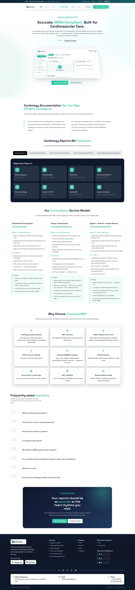
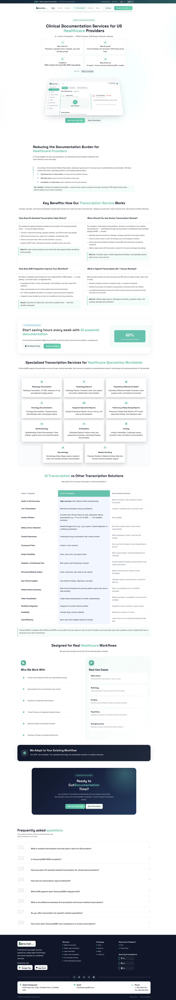
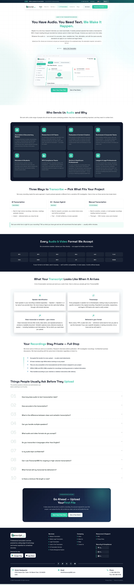

How I restructured the digital platform, information architecture, and responsive frontend for a multi-regional medical transcription platform — transforming a fragmented legacy ASP.NET website into an accessible, trustworthy, and modern healthcare SaaS experience.

iTranscript360 is a healthcare documentation and medical transcription platform designed to help physicians, hospital systems, and legal practices streamline clinical documentation. The platform operates a hybrid dual-engine model: combining rapid ambient AI scribing with specialized human medical transcriptionists for high-complexity specialties.
The core clinical operations, transcriptionist networks, and compliance frameworks operated by iTranscript360 as an enterprise entity:
My direct hands-on work focusing on interface architecture, visual design, and client-side web implementation:
Quarter-century enterprise heritage in medical transcription and clinical records management.
Utilized across outpatient clinics, regional imaging centers, and multi-specialty practices.
Quality standard maintained via hybrid AI transcription paired with expert human review.
Processed across 40+ clinical specialties with tailored medical vocabularies.
When examining the previous ASP.NET implementation of iTranscript360, several structural and visual issues prevented the platform from effectively communicating its clinical credibility and breadth of service.
The legacy site presented cardiology, radiology, ophthalmology, and medico-legal transcription as dense, unformatted blocks of text without visual categorization or scannable data.
Healthcare practice administrators visit with specific clinical requirements (e.g., echo measurement parsing or PACS integration). If they cannot confirm specialty support in 5 seconds, they bounce.
I created modular specialty cards with clear anatomy: turnaround time badge, supported clinical vocabularies, EHR compatibility tags, and sample report format previews.
Vital security credentials (HIPAA, SOC 2, ISO 9001, Business Associate Agreements) were buried in footers or hidden deep within general body copy.
In clinical software, compliance is an immediate deal-breaker. Hospital compliance officers and practice owners will not proceed to a quote without instant verification of security protocols.
I instituted a persistent, prominent Trust & Compliance Bar directly below the hero section across all pages, showcasing verified certifications, encryption protocols, and signed BAA readiness.
iTranscript360 serves the US, UK, Australia, and India. The legacy site mixed US CPT codes, UK NHS terminology, and Australian standards on the same pages without dedicated regional routing.
UK NHS General Practitioners were alienated by US-centric Medicare terminology, while US clinics were confused by NHS EMIS Web and SystmOne references.
I designed an intuitive, accessible country switcher in the top navigation and established dedicated regional landing experiences (including the UK NHS edition tailored to British clinical workflows).
The legacy ASP.NET templates were built around fixed-width containers that broke or triggered horizontal scrolling on iPads and mobile screens.
Modern clinicians and practice managers frequently evaluate documentation tools during hospital rounds or between patient visits using tablets and mobile devices.
I hand-coded a fluid, responsive frontend using CSS Grid and Flexbox with minimum touch-target dimensions of 44×44px, ensuring complete usability across smartphone, tablet, and multi-monitor setups.
Here is the step-by-step methodology I followed to take iTranscript360 from legacy audit to production-ready design and responsive code.
I inspected all existing .aspx pages, forms, and service descriptions on the live website. I documented broken breakpoints, low-contrast text elements, buried compliance information, and inconsistent button styling across the ecosystem.
I grouped the scattered service offerings into four intuitive vertical pillars: (1) Clinical Specialty Transcription, (2) Ambient AI Scribing & Practice Management, (3) International Portals (US/UK/AU/IND), and (4) Enterprise Onboarding with an Instant Quote Calculator.
In Figma, I established an accessible design language suited for clinical environments: authoritative deep navy typography, calm medical teal accents, generous whitespace, and high-contrast readable layouts. I engineered reusable card components, trust badges, and data tables.
I implemented the redesigned templates using semantic HTML5 tags and modern CSS (CSS Custom Properties, Flexbox, and CSS Grid). I avoided heavy UI libraries to guarantee sub-second rendering speeds on hospital intranets and legacy clinic workstations.
I tested the implementation across desktop monitors, iPads (portrait/landscape), and mobile phones. I verified that all typography met WCAG 2.1 AA contrast requirements and confirmed that interactive touch targets provided clear visual feedback.
Comparing the baseline legacy ASP.NET implementation against the redesigned platform across five critical design dimensions.
| Design Dimension | Legacy ASP.NET Baseline | My Implemented Redesign |
|---|---|---|
| Information Architecture |
Legacy Flat list of 20+ disconnected .aspx files with no clear hierarchy. Specialty transcription, AI services, and regional portals were scattered across unrelated menus.
|
Redesigned Organized into 4 clear functional pillars with a structured mega-menu: Clinical Specialties, AI & Practice Management, International Portals, and Enterprise Onboarding. |
| Visual Calm & Hierarchy |
Legacy Dense, wall-to-wall text copy; generic system fonts; minimal whitespace; visually jarring multi-colored callout boxes that increased cognitive fatigue for clinicians. |
Redesigned Light healthcare SaaS aesthetic with generous margins, refined typography hierarchy (Bricolage Grotesque & Plus Jakarta Sans), and calm medical teal accents. |
| Trust & Compliance Signaling |
Legacy Security and regulatory compliance (HIPAA, SOC 2, ISO 9001, BAA) were buried in footers or hidden deep within general paragraphs. |
Redesigned Standardized Trust & Security Compliance Bar directly beneath the hero section with prominent verified certification chips and encryption badges. |
| Multi-Region Navigation |
Legacy Mixed US, UK, and Australian terminology without dedicated routing; UK NHS clinicians were frequently disoriented by US-specific CPT and Medicare references. |
Redesigned Persistent top-level country switcher routing users to tailored regional experiences (e.g. UK NHS portal emphasizing EMIS Web and SystmOne integration). |
| Responsive Behavior |
Legacy Fixed-width desktop layouts (around 960px) resulting in awkward horizontal scrolling and broken forms when viewed on iPads or mobile devices. |
Redesigned Fully fluid CSS Grid and Flexbox layout scaling seamlessly from 320px mobile screens to large desktop workstation monitors with zero horizontal overflow. |
A coherent design system engineered to project clinical authority, reduce eye strain during long hospital shifts, and maintain cross-page consistency.
Contemporary, high-character grotesque typeface featuring tight tracking, distinct apertures, and editorial warmth suited for clinical authority.
Geometric sans-serif with tall x-height, clear numeric glyphs, and exceptional legibility across dense medical reports and tabular data screens.
Specialized parsing of echocardiogram measurements, cardiac catheterization notes, and Holter monitoring telemetry.
Allows practitioners to toggle between US HIPAA, UK NHS, and Australian compliance portals without losing their page context.
To ensure maximum compatibility with existing hospital networks and fast loading speeds, I avoided bulky JavaScript frameworks and built the frontend using modern native web standards.
Structured using native semantic landmarks (<header>, <nav>, <main>, <section>, <article>, <footer>) for clean document hierarchy, search indexing, and screen reader accessibility.
Engineered using CSS Custom Properties for theme tokens, CSS Grid with repeat(auto-fit, minmax(...)) for fluid card layouts, and responsive media queries at 1024px and 768px breakpoints.
Implemented client-side interactions in clean vanilla JavaScript: interactive full-screen image lightbox modal, reading progress indicator, and accessible mobile drawer toggle with touch gesture dismissal.
Click any screen to view it in full resolution. Each screen represents genuine project files and production layouts designed and implemented by me.
The primary public-facing portal establishing iTranscript360's dual-engine value proposition: ambient AI documentation paired with expert medical transcription, verified compliance badges, and instant quote estimation.

A clinical specialty page tailored for cardiologists and catheterization lab directors, detailing automated echocardiogram measurement parsing, structured diagnostic templates, and PACS imaging compatibility.

Active consultation workspace featuring real-time audio waveform visualization, speaker diarization tags, live ICD-10 clinical suggestion badges, and one-click physician sign-off.

Specialized editor crafted for professional medical transcriptionists, featuring USB foot-pedal keybinds, variable playback scrubbing (0.5x to 2.5x), timestamp seek anchors, and clinical terminology autocorrect.

Integrated clinical EHR command center connecting outpatient queue status, triage priority badges, historical patient encounters, and direct EHR write-back telemetry.

Comprehensive design system tokens, typography scales, and responsive views verified across hospital bedside iPads, physician mobile rounds, and multi-monitor desktop workstations.

Dedicated regional landing experience configured for UK General Practitioners and NHS hospital trusts, highlighting native EMIS Web and SystmOne EHR synchronization with UK server residency.
Designing and coding for the healthcare SaaS domain provided distinct challenges that shaped my approach to interface architecture.
Working on iTranscript360 reinforced that in healthcare, visual restraint is a core functional requirement. Medical practitioners and practice managers have zero patience for flashy decorative animations or crypto-style gradients.
While the UI/UX design and frontend presentation achieved their goals, several future opportunities remain for subsequent iterations: